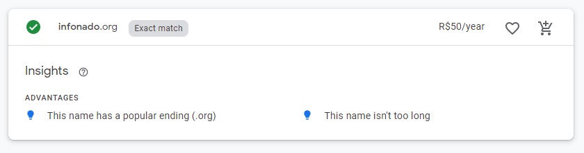

Infonado.org | Site Plan
Overview
Site Name
The site is going to be called Infonado.org. The name is a simple mix from the words Information and Tornado, suggesting a fast rotation of information.
Screenshot from Google Domains webpage showing that 'infonado.org' is available
Purpose Statement
Just like a tornado, which gathers everything nearby, the Infonado.org web site is designed to gather the most important information for youth and young adults; from the best games in the market right now, to great courses to increment their curriculum, to basic informations as “is it going to rain today?” In summary, the main purpose of the site is to become a reliable spot where people can find interesting and useful information.